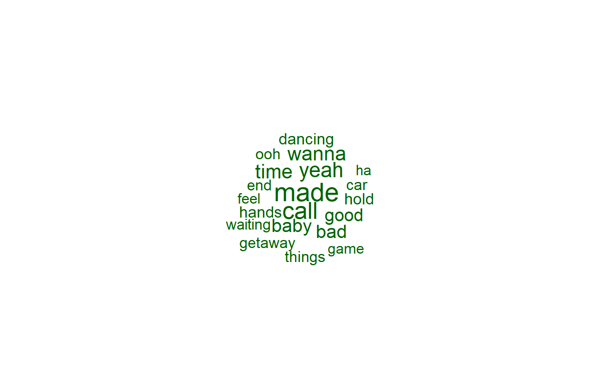
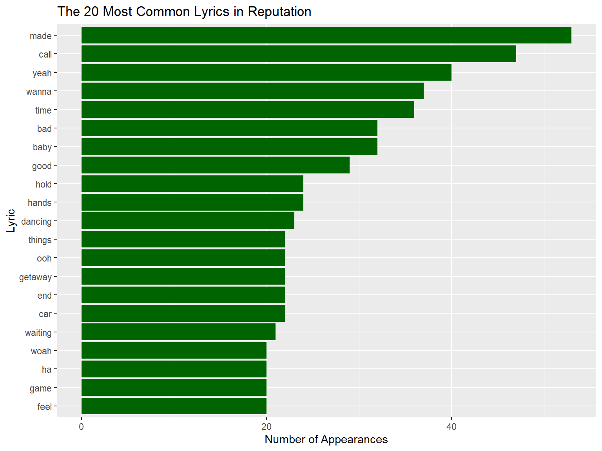
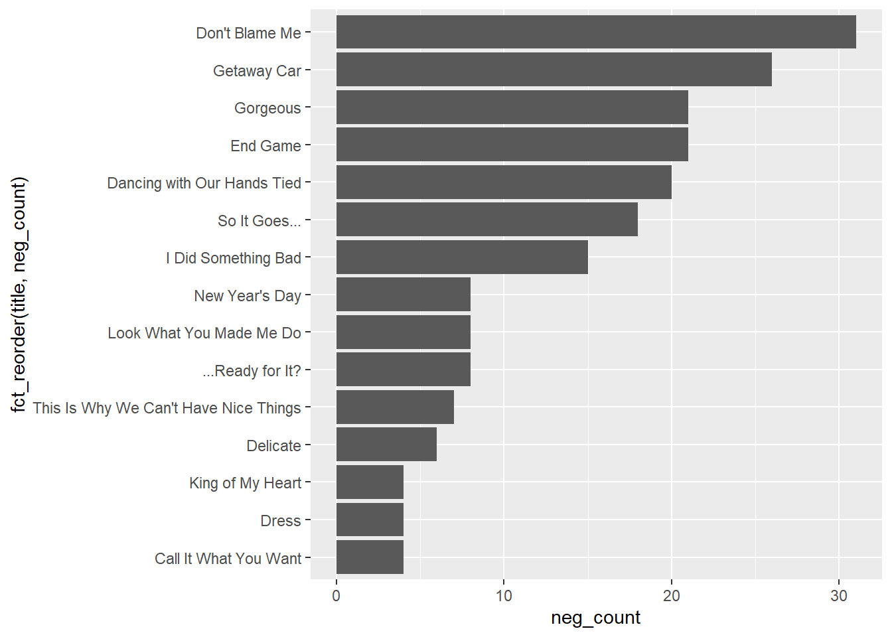
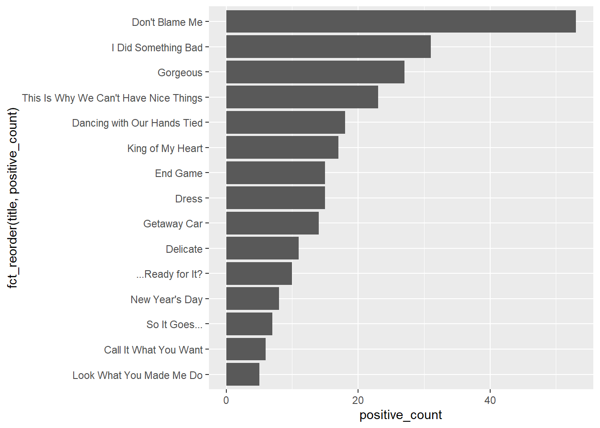
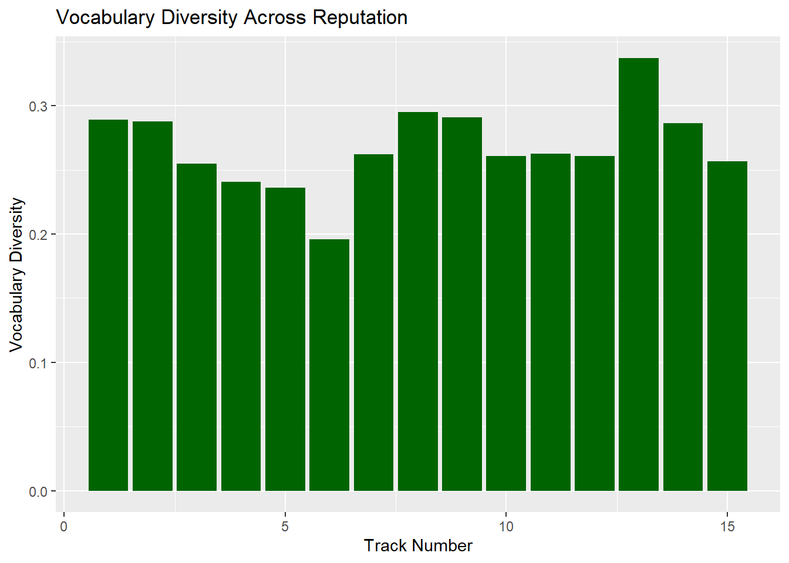

Avery Shaw
For this project, I am using the Corpus of Taylor Swift Lyrics, a dataset on GitHub containing lyrics from Taylor Swift’s studio albums and selected non-album songs. The dataset organizes lyrics by album, track, lyric line, and song structure, allowing individual words to be analyzed within their larger context.
I chose to focus on lyrics from Swift’s Reputation album, specifically because of the various emotional undertones in these collection of songs. Songs like Look What You Made Me Do and I Did Something Bad have more of vengeful and spiteful undertone, but at the same time there are songs like Gorgeous and King of My Heart which have loving undertones. To better understand the themes of this album, I will use text analysis to investigate how language varies across different types of songs, how sentiments vary over the course of the album, and which song is the most lyrically complex.
Out of curiousity, I wanted to see what the most common words were, besides stop words, within the album.


![This is a bar chart showing the the net sentiment of words in each track of Taylor Swift's Reputation album. On the x-axis is track number, ranging from track 1 to track 15. On the y-axis is the net sentiment, ranging from -16 to 30. Net sentiments above 0 are colored in green, indicating positive net sentiments. Net sentiments below 0 are colored in red, indicating negative net sentiments. The first 6 tracks of the album have positive net sentiments, followed by 3 negative net sentiment tracks, and then sentiment fluctuates after that.](Avery_Shaw_Mini_Project_1_files/figure-html/unnamed-chunk-3-1.png)


In looking at lyric complexity, I am taking into account the amount of unique words in a song out of all the total words. Songs with a higher proportion of unique words will have higher vocabulary diversity, and therefore less repetition of words.

# A tibble: 15 × 5
# Groups: track_number [15]
track_number title total_words unique_words repetition_rate
<dbl> <chr> <int> <int> <dbl>
1 13 This Is Why We Can't H… 415 140 0.663
2 8 Gorgeous 437 129 0.705
3 9 Getaway Car 546 159 0.709
4 1 ...Ready for It? 453 131 0.711
5 2 End Game 702 202 0.712
6 14 Call It What You Want 520 149 0.713
7 11 Dancing with Our Hands… 438 115 0.737
8 7 So It Goes... 389 102 0.738
9 12 Dress 491 128 0.739
10 10 King of My Heart 468 122 0.739
11 15 New Year's Day 366 94 0.743
12 3 I Did Something Bad 463 118 0.745
13 4 Don't Blame Me 482 116 0.759
14 5 Delicate 487 115 0.764
15 6 Look What You Made Me … 572 112 0.804It looks like Track 13, This Is Why We Can’t Have Nice Things, is the most lyrically complex out of all the songs with the highest proportion of unique vocabulary and, therefore, lowest word repetition rate of 0.663.
We can also see that Track 6, Look What You Made Me Do, is the least lyrically complex out of all the songs, with the lowest proportion of unique vocabulary and, therefore, highest word repetition rate of 0.804.